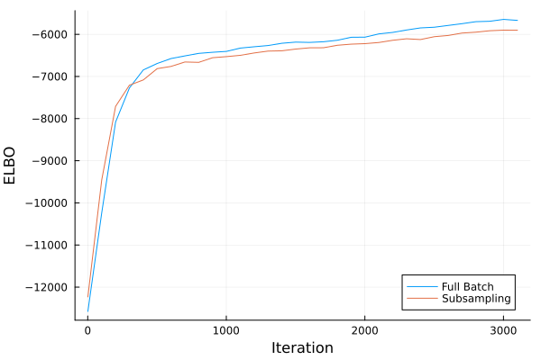
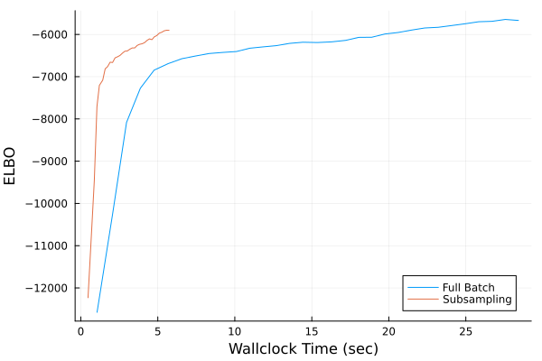
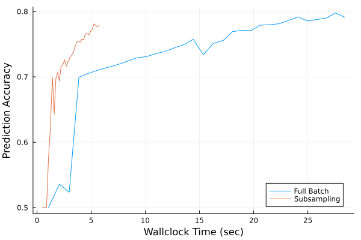

Scaling to Large Datasets with Subsampling
In this tutorial, we will show how to use AdvancedVI on problems with large datasets. Variational inference (VI) has a long and successful history[HBWP2013][TL2014][HBB2010] in large scale inference using (minibatch) subsampling. In this tutorial, we will see how to perform subsampling with KLMinRepGradProxDescent, which was originally described in the paper by Titsias and Lázaro-Gredilla[TL2014]; Kucukelbir et al[KTRGB2017].
Setting Up Subsampling
We will consider a typical hierarchical logistic regression example.
using LogDensityProblems: LogDensityProblems
using Distributions
using FillArrays
struct LogReg{XType,YType}
X::XType
y::YType
n_data::Int
end
function LogDensityProblems.logdensity(model::LogReg, θ)
(; X, y, n_data) = model
n, d = size(X)
β, logσ = θ[1:size(X, 2)], θ[end]
σ = exp(logσ)
logprior_β = logpdf(MvNormal(Zeros(d), σ), β)
logprior_σ = logpdf(Normal(0, 3), σ)
logit = X*β
loglike_y = mapreduce((li, yi) -> logpdf(BernoulliLogit(li), yi), +, logit, y)
return n_data/n*loglike_y + logprior_β + logprior_σ
end
function LogDensityProblems.dimension(model::LogReg)
return size(prob.X, 2) + 1
end
function LogDensityProblems.capabilities(::Type{<:LogReg})
return LogDensityProblems.LogDensityOrder{0}()
end
nothingNotice that, to use subsampling, we need be able to rescale the likelihood strength. That is, for the gradient of the log-density with a batch of data points of size n to be an unbiased estimate of the gradient using the full dataset of size n_data, we need to scale the likelihood by n_data/n. This part is critical to ensure that the algorithm correctly approximates the posterior with the full dataset.
For the dataset, we will use one that is larger than that used in the Basic Example. This is to properly assess the advantage of subsampling. In particular, we will utilize the "Phishing" dataset[Tan2018], which consists of 10000 data points, each with 48 features. The goal is to predict whether the features of a specific website indicate whether it is a phishing website or a legitimate one. The dataset id on the OpenML repository is 46722.
using OpenML: OpenML
using DataFrames: DataFrames
data = Array(DataFrames.DataFrame(OpenML.load(46722)))
X = Matrix{Float64}(data[:, 2:end])
y = Vector{Bool}(data[:, end])
nothingThe features start from the seoncd column, while the last column are the class labels.
Let's also apply some basic pre-processing.
using Statistics
X = (X .- mean(X; dims=2)) ./ std(X; dims=2)
X = hcat(X, ones(size(X, 1)))
nothingLet's now istantiate the model and set up automatic differentiation using LogDensityProblemsAD.
using ADTypes, ReverseDiff
using LogDensityProblemsAD
prob = LogReg(X, y, size(X, 1))
prob_ad = LogDensityProblemsAD.ADgradient(
ADTypes.AutoReverseDiff(), prob; x=randn(LogDensityProblems.dimension(prob))
)
nothingTo enable subsampling, LogReg has to implement the method AdvancedVI.subsample. For our model, this is fairly simple: We only need to select the rows of X and the elements of y corresponding to the batch of data points. As subtle point here is that we wrapped prob with LogDensityProblemsAD.ADgradient into prob_ad. Therefore, AdvancedVI sees prob_ad and not prob. This means we have to specialize AdvancedVI.subsample to typeof(prob_ad) and not LogReg.
using Accessors
using AdvancedVI
function AdvancedVI.subsample(prob::typeof(prob_ad), idx)
(; X, y, n_data) = parent(prob_ad)
prob′ = @set prob.ℓ.X = X[idx, :]
prob′′ = @set prob′.ℓ.y = y[idx]
return prob′′
end
nothingThe default implementation of AdvancedVI.subsample is AdvancedVI.subsample(model, idx) = model. Therefore, if the specialization of AdvancedVI.subsample is not set up properly, AdvancedVI will silently use full-batch gradients instead of subsampling. It is thus useful to check whether the right specialization of AdvancedVI.subsample is being called.
Scalable Inference via AdvancedVI
In this example, we will compare the convergence speed of KLMinRepGradProxDescent with and without subsampling. Subsampling can be turned on by supplying a subsampling strategy. Here, we will use ReshufflingBatchSubsampling, which implements random reshuffling. We will us a batch size of 32, which results in 313 = length(subsampling) = ceil(Int, size(X,2)/32) steps per epoch.
dataset = 1:size(prob.X, 1)
batchsize = 32
subsampling = ReshufflingBatchSubsampling(dataset, batchsize)
alg_sub = KLMinRepGradProxDescent(ADTypes.AutoReverseDiff(; compile=true); subsampling)
nothingRecall that each epoch is 313 steps. When using ReshufflingBatchSubsampling, it is best to choose the number of iterations to be a multiple of the number of steps length(subsampling) in an epoch. This is due to a peculiar property of ReshufflingBatchSubsampling: the objective value tends to increase during an epoch, and come down nearing the end. (Theoretically, this is due to conditionally biased nature of random reshuffling[MKR2020].) Therefore, the objective value is minimized exactly after the last step of each epoch.
num_epochs = 10
max_iter = num_epochs * length(subsampling)
nothingIf we don't supply a subsampling strategy to KLMinRepGradProxDescent, subsampling will not be used.
alg_full = KLMinRepGradProxDescent(ADTypes.AutoReverseDiff(; compile=true))
nothingThe variational family will be set up as follows:
using LinearAlgebra
d = LogDensityProblems.dimension(prob_ad)
q = FullRankGaussian(zeros(d), LowerTriangular(Matrix{Float64}(0.6*I, d, d)))
nothingIt now remains to run VI. For comparison, we will record both the ELBO (with a large number of Monte Carlo samples) and the prediction accuracy.
using StatsFuns: StatsFuns
logging_interval = 100
time_begin = nothing
"""
logistic_prediction(X, μ_β, Σ_β)
Approximate the posterior predictive probability for a logistic link function using Mackay's approximation (Bishop p. 220).
"""
function logistic_prediction(X, μ_β, Σ_β)
xtΣx = sum((prob.X*Σ_β) .* prob.X; dims=2)[:, 1]
κ = @. 1/sqrt(1 + π/8*xtΣx)
return StatsFuns.logistic.(κ .* X*μ_β)
end
function callback(; iteration, averaged_params, restructure, kwargs...)
if mod(iteration, logging_interval) == 1
# Use the averaged parameters (the eventual output of the algorithm)
q_avg = restructure(averaged_params)
# Compute predictions using
μ_β = mean(q_avg)[1:(end - 1)] # posterior mean of β
Σ_β = cov(q_avg)[1:(end - 1), end - 1] # marginal posterior covariance of β
y_pred = logistic_prediction(X, μ_β, Σ_β) .> 0.5
# Prediction accuracy
acc = mean(y_pred .== prob.y)
# Higher fidelity estimate of the ELBO on the averaged parameters
n_samples = 256
elbo_callback = -estimate_objective(alg_full, q_avg, prob; n_samples)
(elbo_callback=elbo_callback, accuracy=acc, time_elapsed=time() - time_begin)
else
nothing
end
end
time_begin = time()
_, info_full, _ = AdvancedVI.optimize(
alg_full, max_iter, prob_ad, q; show_progress=true, callback
);
time_begin = time()
_, info_sub, _ = AdvancedVI.optimize(
alg_sub, max_iter, prob_ad, q; show_progress=true, callback
);
nothing
Optimizing 0%| | ETA: 0:37:32 ( 0.72 s/it)
elbo: -27899.02636195412
iteration: 2
Optimizing 3%|▉ | ETA: 0:01:29 (29.21 ms/it)
elbo: -32260.23967873108
iteration: 92
Optimizing 4%|█▍ | ETA: 0:01:08 (22.68 ms/it)
elbo: -7738.7316092579385
iteration: 137
Optimizing 5%|█▌ | ETA: 0:01:03 (21.29 ms/it)
elbo: -29082.37940352366
iteration: 151
Optimizing 5%|█▋ | ETA: 0:01:00 (20.14 ms/it)
elbo: -13732.889422994891
iteration: 165
Optimizing 6%|█▊ | ETA: 0:00:56 (19.14 ms/it)
elbo: -7182.130083098077
iteration: 179
Optimizing 6%|█▉ | ETA: 0:00:54 (18.38 ms/it)
elbo: -7736.742052346971
iteration: 192
Optimizing 7%|██ | ETA: 0:00:53 (18.11 ms/it)
elbo: -7471.370040547753
iteration: 205
Optimizing 7%|██▏ | ETA: 0:00:51 (17.42 ms/it)
elbo: -13557.09575610094
iteration: 219
Optimizing 7%|██▎ | ETA: 0:00:49 (16.83 ms/it)
elbo: -7245.0565949009515
iteration: 233
Optimizing 8%|██▌ | ETA: 0:00:47 (16.30 ms/it)
elbo: -7605.040172171177
iteration: 247
Optimizing 8%|██▋ | ETA: 0:00:46 (15.88 ms/it)
elbo: -17787.041873670503
iteration: 260
Optimizing 9%|██▊ | ETA: 0:00:44 (15.44 ms/it)
elbo: -7394.199499090392
iteration: 274
Optimizing 9%|██▉ | ETA: 0:00:43 (15.06 ms/it)
elbo: -8017.206748172784
iteration: 288
Optimizing 10%|███ | ETA: 0:00:42 (15.01 ms/it)
elbo_callback: -7577.287655731537
accuracy: 0.6941
time_elapsed: 4.642220973968506
elbo: -7744.563557383123
iteration: 301
Optimizing 10%|███▏ | ETA: 0:00:41 (14.68 ms/it)
elbo: -6724.259226531229
iteration: 315
Optimizing 11%|███▎ | ETA: 0:00:40 (14.36 ms/it)
elbo: -6579.179471348951
iteration: 329
Optimizing 11%|███▍ | ETA: 0:00:39 (14.09 ms/it)
elbo: -6790.575290230647
iteration: 343
Optimizing 11%|███▌ | ETA: 0:00:38 (13.82 ms/it)
elbo: -13262.590992499805
iteration: 357
Optimizing 12%|███▋ | ETA: 0:00:37 (13.59 ms/it)
elbo: -6514.4518283713805
iteration: 371
Optimizing 12%|███▉ | ETA: 0:00:37 (13.36 ms/it)
elbo: -8994.133020614625
iteration: 385
Optimizing 13%|████ | ETA: 0:00:36 (13.16 ms/it)
elbo: -7147.672828638118
iteration: 399
Optimizing 13%|████▏ | ETA: 0:00:36 (13.20 ms/it)
elbo: -7547.60807908296
iteration: 412
Optimizing 14%|████▎ | ETA: 0:00:35 (13.01 ms/it)
elbo: -6883.546746747571
iteration: 426
Optimizing 14%|████▍ | ETA: 0:00:35 (12.84 ms/it)
elbo: -6521.226761646675
iteration: 440
Optimizing 15%|████▌ | ETA: 0:00:34 (12.68 ms/it)
elbo: -6851.749220805141
iteration: 454
Optimizing 15%|████▋ | ETA: 0:00:33 (12.53 ms/it)
elbo: -6564.463686012597
iteration: 468
Optimizing 15%|████▊ | ETA: 0:00:33 (12.41 ms/it)
elbo: -8830.73549702062
iteration: 481
Optimizing 16%|████▉ | ETA: 0:00:32 (12.27 ms/it)
elbo: -7771.509496123134
iteration: 495
Optimizing 16%|█████ | ETA: 0:00:32 (12.33 ms/it)
elbo: -6452.328551895401
iteration: 508
Optimizing 17%|█████▏ | ETA: 0:00:32 (12.19 ms/it)
elbo: -8076.07920776209
iteration: 522
Optimizing 17%|█████▎ | ETA: 0:00:31 (12.07 ms/it)
elbo: -7478.911647699505
iteration: 536
Optimizing 18%|█████▌ | ETA: 0:00:31 (11.95 ms/it)
elbo: -6795.165738732849
iteration: 550
Optimizing 18%|█████▋ | ETA: 0:00:30 (11.86 ms/it)
elbo: -8153.651668679121
iteration: 563
Optimizing 18%|█████▊ | ETA: 0:00:30 (11.75 ms/it)
elbo: -7535.852226037132
iteration: 577
Optimizing 19%|█████▉ | ETA: 0:00:30 (11.65 ms/it)
elbo: -6920.883192474458
iteration: 591
Optimizing 19%|██████ | ETA: 0:00:30 (11.71 ms/it)
elbo: -6634.050909461621
iteration: 603
Optimizing 20%|██████▏ | ETA: 0:00:29 (11.62 ms/it)
elbo: -6910.35271976712
iteration: 617
Optimizing 20%|██████▎ | ETA: 0:00:29 (11.59 ms/it)
elbo: -6198.013539856704
iteration: 630
Optimizing 20%|██████▍ | ETA: 0:00:31 (12.36 ms/it)
elbo: -6289.015106369998
iteration: 640
Optimizing 21%|██████▌ | ETA: 0:00:30 (12.27 ms/it)
elbo: -6495.394039094589
iteration: 653
Optimizing 21%|██████▋ | ETA: 0:00:30 (12.19 ms/it)
elbo: -6276.43659218526
iteration: 666
Optimizing 22%|██████▊ | ETA: 0:00:30 (12.09 ms/it)
elbo: -6814.740086768152
iteration: 680
Optimizing 22%|██████▉ | ETA: 0:00:29 (12.02 ms/it)
elbo: -6628.301945355478
iteration: 693
Optimizing 23%|███████ | ETA: 0:00:29 (12.07 ms/it)
elbo: -6504.307695023665
iteration: 706
Optimizing 23%|███████▏ | ETA: 0:00:29 (11.98 ms/it)
elbo: -6433.351351639797
iteration: 720
Optimizing 23%|███████▎ | ETA: 0:00:29 (11.91 ms/it)
elbo: -6090.105706178299
iteration: 733
Optimizing 24%|███████▍ | ETA: 0:00:28 (11.84 ms/it)
elbo: -7164.848261844813
iteration: 746
Optimizing 24%|███████▌ | ETA: 0:00:28 (11.77 ms/it)
elbo: -6707.107068357406
iteration: 759
Optimizing 25%|███████▋ | ETA: 0:00:28 (11.71 ms/it)
elbo: -7248.699616876958
iteration: 772
Optimizing 25%|███████▊ | ETA: 0:00:27 (11.63 ms/it)
elbo: -6381.157687401113
iteration: 786
Optimizing 26%|███████▉ | ETA: 0:00:27 (11.57 ms/it)
elbo: -5819.265678468861
iteration: 800
Optimizing 26%|████████ | ETA: 0:00:27 (11.62 ms/it)
elbo: -5997.291202105251
iteration: 812
Optimizing 26%|████████▏ | ETA: 0:00:27 (11.56 ms/it)
elbo: -6469.473339700809
iteration: 825
Optimizing 27%|████████▎ | ETA: 0:00:26 (11.49 ms/it)
elbo: -6259.125849581246
iteration: 839
Optimizing 27%|████████▌ | ETA: 0:00:26 (11.44 ms/it)
elbo: -6791.059151685412
iteration: 852
Optimizing 28%|████████▋ | ETA: 0:00:26 (11.38 ms/it)
elbo: -5976.370842189132
iteration: 866
Optimizing 28%|████████▊ | ETA: 0:00:25 (11.33 ms/it)
elbo: -5891.854413444457
iteration: 879
Optimizing 29%|████████▉ | ETA: 0:00:25 (11.27 ms/it)
elbo: -6801.52180621658
iteration: 893
Optimizing 29%|█████████ | ETA: 0:00:25 (11.32 ms/it)
elbo: -5958.536612109892
iteration: 905
Optimizing 29%|█████████▏ | ETA: 0:00:25 (11.26 ms/it)
elbo: -6381.924080544401
iteration: 919
Optimizing 30%|█████████▎ | ETA: 0:00:25 (11.21 ms/it)
elbo: -6199.9950159579475
iteration: 933
Optimizing 30%|█████████▍ | ETA: 0:00:24 (11.16 ms/it)
elbo: -7060.122002146163
iteration: 947
Optimizing 31%|█████████▌ | ETA: 0:00:24 (11.11 ms/it)
elbo: -6859.31204257948
iteration: 960
Optimizing 31%|█████████▋ | ETA: 0:00:24 (11.07 ms/it)
elbo: -6837.572255915516
iteration: 973
Optimizing 32%|█████████▊ | ETA: 0:00:24 (11.02 ms/it)
elbo: -6348.858543319165
iteration: 987
Optimizing 32%|█████████▉ | ETA: 0:00:24 (11.06 ms/it)
elbo_callback: -6372.443627289423
accuracy: 0.7389
time_elapsed: 11.197877883911133
elbo: -5978.054422316118
iteration: 1001
Optimizing 32%|██████████ | ETA: 0:00:23 (11.01 ms/it)
elbo: -6142.601780161133
iteration: 1015
Optimizing 33%|██████████▏ | ETA: 0:00:23 (10.97 ms/it)
elbo: -5653.693953029838
iteration: 1028
Optimizing 33%|██████████▍ | ETA: 0:00:23 (10.93 ms/it)
elbo: -6715.646520493508
iteration: 1042
Optimizing 34%|██████████▌ | ETA: 0:00:23 (10.88 ms/it)
elbo: -6008.976167904981
iteration: 1056
Optimizing 34%|██████████▋ | ETA: 0:00:22 (10.84 ms/it)
elbo: -6345.827458933833
iteration: 1070
Optimizing 35%|██████████▊ | ETA: 0:00:22 (10.80 ms/it)
elbo: -6594.0924724189945
iteration: 1083
Optimizing 35%|██████████▉ | ETA: 0:00:22 (10.76 ms/it)
elbo: -6522.366032220811
iteration: 1097
Optimizing 35%|███████████ | ETA: 0:00:22 (10.80 ms/it)
elbo: -6245.490618317496
iteration: 1110
Optimizing 36%|███████████▏ | ETA: 0:00:22 (10.76 ms/it)
elbo: -6183.6061870242675
iteration: 1124
Optimizing 36%|███████████▎ | ETA: 0:00:21 (10.72 ms/it)
elbo: -6343.275281341638
iteration: 1138
Optimizing 37%|███████████▍ | ETA: 0:00:21 (10.68 ms/it)
elbo: -6436.042789113369
iteration: 1152
Optimizing 37%|███████████▌ | ETA: 0:00:21 (10.64 ms/it)
elbo: -5821.123137986822
iteration: 1166
Optimizing 38%|███████████▋ | ETA: 0:00:21 (10.60 ms/it)
elbo: -7653.347881143429
iteration: 1180
Optimizing 38%|███████████▉ | ETA: 0:00:20 (10.57 ms/it)
elbo: -7183.658865178076
iteration: 1194
Optimizing 39%|████████████ | ETA: 0:00:20 (10.60 ms/it)
elbo: -5933.7856619005015
iteration: 1207
Optimizing 39%|████████████▏ | ETA: 0:00:20 (10.56 ms/it)
elbo: -6761.223491793581
iteration: 1221
Optimizing 39%|████████████▎ | ETA: 0:00:20 (10.53 ms/it)
elbo: -6343.838257788198
iteration: 1235
Optimizing 40%|████████████▍ | ETA: 0:00:20 (10.50 ms/it)
elbo: -6162.759663038935
iteration: 1249
Optimizing 40%|████████████▌ | ETA: 0:00:20 (10.47 ms/it)
elbo: -6927.76429218359
iteration: 1263
Optimizing 41%|████████████▋ | ETA: 0:00:19 (10.43 ms/it)
elbo: -6413.281588014563
iteration: 1277
Optimizing 41%|████████████▊ | ETA: 0:00:19 (10.41 ms/it)
elbo: -6841.435636585166
iteration: 1291
Optimizing 42%|████████████▉ | ETA: 0:00:19 (10.45 ms/it)
elbo: -6248.602655436518
iteration: 1303
Optimizing 42%|█████████████ | ETA: 0:00:19 (10.41 ms/it)
elbo: -6380.468230921782
iteration: 1317
Optimizing 43%|█████████████▏ | ETA: 0:00:19 (10.38 ms/it)
elbo: -6374.295147566622
iteration: 1331
Optimizing 43%|█████████████▍ | ETA: 0:00:18 (10.35 ms/it)
elbo: -5829.649490873445
iteration: 1345
Optimizing 43%|█████████████▌ | ETA: 0:00:18 (10.32 ms/it)
elbo: -5883.096105461086
iteration: 1359
Optimizing 44%|█████████████▋ | ETA: 0:00:18 (10.29 ms/it)
elbo: -6242.887195559184
iteration: 1373
Optimizing 44%|█████████████▊ | ETA: 0:00:18 (10.27 ms/it)
elbo: -6083.428853958701
iteration: 1387
Optimizing 45%|█████████████▉ | ETA: 0:00:18 (10.30 ms/it)
elbo_callback: -6236.233563677475
accuracy: 0.7562
time_elapsed: 14.55565595626831
elbo: -7648.696330208374
iteration: 1401
Optimizing 45%|██████████████ | ETA: 0:00:18 (10.27 ms/it)
elbo: -6132.6785380783485
iteration: 1415
Optimizing 46%|██████████████▏ | ETA: 0:00:17 (10.25 ms/it)
elbo: -6720.310288677845
iteration: 1429
Optimizing 46%|██████████████▎ | ETA: 0:00:17 (10.22 ms/it)
elbo: -6748.647236846435
iteration: 1443
Optimizing 47%|██████████████▍ | ETA: 0:00:17 (10.20 ms/it)
elbo: -6116.369700330551
iteration: 1457
Optimizing 47%|██████████████▋ | ETA: 0:00:17 (10.17 ms/it)
elbo: -6592.905492636408
iteration: 1471
Optimizing 47%|██████████████▊ | ETA: 0:00:17 (10.15 ms/it)
elbo: -13122.269975360736
iteration: 1485
Optimizing 48%|██████████████▉ | ETA: 0:00:17 (10.12 ms/it)
elbo: -6513.94866802774
iteration: 1499
Optimizing 48%|███████████████ | ETA: 0:00:16 (10.16 ms/it)
elbo: -6361.90735757515
iteration: 1511
Optimizing 49%|███████████████▏ | ETA: 0:00:16 (10.13 ms/it)
elbo: -7983.407016559961
iteration: 1525
Optimizing 49%|███████████████▎ | ETA: 0:00:16 (10.11 ms/it)
elbo: -5970.939562288285
iteration: 1539
Optimizing 50%|███████████████▍ | ETA: 0:00:16 (10.08 ms/it)
elbo: -6262.3518796720555
iteration: 1553
Optimizing 50%|███████████████▌ | ETA: 0:00:16 (10.06 ms/it)
elbo: -6733.781461731112
iteration: 1567
Optimizing 51%|███████████████▋ | ETA: 0:00:16 (10.04 ms/it)
elbo: -5649.259744052758
iteration: 1581
Optimizing 51%|███████████████▊ | ETA: 0:00:15 (10.01 ms/it)
elbo: -6137.516002122383
iteration: 1595
Optimizing 51%|███████████████▉ | ETA: 0:00:15 (10.05 ms/it)
elbo: -9711.242832144813
iteration: 1609
Optimizing 52%|████████████████▏ | ETA: 0:00:15 (10.02 ms/it)
elbo: -6141.916112899946
iteration: 1623
Optimizing 52%|████████████████▎ | ETA: 0:00:15 (10.00 ms/it)
elbo: -5823.5138401541835
iteration: 1637
Optimizing 53%|████████████████▍ | ETA: 0:00:15 ( 9.98 ms/it)
elbo: -5937.818360886814
iteration: 1651
Optimizing 53%|████████████████▌ | ETA: 0:00:15 ( 9.96 ms/it)
elbo: -9059.098544478336
iteration: 1665
Optimizing 54%|████████████████▋ | ETA: 0:00:14 ( 9.93 ms/it)
elbo: -6980.5711809416325
iteration: 1679
Optimizing 54%|████████████████▊ | ETA: 0:00:14 ( 9.91 ms/it)
elbo: -6554.938555660249
iteration: 1693
Optimizing 55%|████████████████▉ | ETA: 0:00:14 ( 9.94 ms/it)
elbo: -9012.393583398307
iteration: 1707
Optimizing 55%|█████████████████ | ETA: 0:00:14 ( 9.92 ms/it)
elbo: -7156.7687322894035
iteration: 1722
Optimizing 55%|█████████████████▎ | ETA: 0:00:14 ( 9.89 ms/it)
elbo: -7356.902503427443
iteration: 1737
Optimizing 56%|█████████████████▍ | ETA: 0:00:14 ( 9.87 ms/it)
elbo: -6265.487101910783
iteration: 1752
Optimizing 56%|█████████████████▌ | ETA: 0:00:13 ( 9.85 ms/it)
elbo: -5946.159194505429
iteration: 1766
Optimizing 57%|█████████████████▋ | ETA: 0:00:13 ( 9.83 ms/it)
elbo: -6738.922079411816
iteration: 1780
Optimizing 57%|█████████████████▊ | ETA: 0:00:13 ( 9.81 ms/it)
elbo: -5788.861667972426
iteration: 1794
Optimizing 58%|█████████████████▉ | ETA: 0:00:13 ( 9.84 ms/it)
elbo: -6363.537404787323
iteration: 1808
Optimizing 58%|██████████████████ | ETA: 0:00:13 ( 9.82 ms/it)
elbo: -9530.475060952405
iteration: 1822
Optimizing 59%|██████████████████▏ | ETA: 0:00:13 ( 9.80 ms/it)
elbo: -6454.990424525707
iteration: 1836
Optimizing 59%|██████████████████▍ | ETA: 0:00:13 ( 9.78 ms/it)
elbo: -6258.355835949162
iteration: 1850
Optimizing 60%|██████████████████▌ | ETA: 0:00:12 ( 9.76 ms/it)
elbo: -8333.454131711207
iteration: 1864
Optimizing 60%|██████████████████▋ | ETA: 0:00:12 ( 9.74 ms/it)
elbo: -7788.307204386182
iteration: 1878
Optimizing 60%|██████████████████▊ | ETA: 0:00:12 ( 9.72 ms/it)
elbo: -5907.50130885728
iteration: 1892
Optimizing 61%|██████████████████▉ | ETA: 0:00:12 ( 9.75 ms/it)
elbo: -5939.767171580767
iteration: 1906
Optimizing 61%|███████████████████ | ETA: 0:00:12 ( 9.73 ms/it)
elbo: -6156.141465682273
iteration: 1921
Optimizing 62%|███████████████████▏ | ETA: 0:00:12 ( 9.71 ms/it)
elbo: -6664.653252431781
iteration: 1936
Optimizing 62%|███████████████████▍ | ETA: 0:00:11 ( 9.69 ms/it)
elbo: -5853.031602702779
iteration: 1951
Optimizing 63%|███████████████████▌ | ETA: 0:00:11 ( 9.67 ms/it)
elbo: -6808.2699367920895
iteration: 1966
Optimizing 63%|███████████████████▋ | ETA: 0:00:11 ( 9.66 ms/it)
elbo: -8095.815789078481
iteration: 1980
Optimizing 64%|███████████████████▊ | ETA: 0:00:11 ( 9.64 ms/it)
elbo: -7713.10829067268
iteration: 1994
Optimizing 64%|███████████████████▉ | ETA: 0:00:11 ( 9.67 ms/it)
elbo: -5962.968652406329
iteration: 2008
Optimizing 65%|████████████████████ | ETA: 0:00:11 ( 9.65 ms/it)
elbo: -6145.758901965918
iteration: 2022
Optimizing 65%|████████████████████▏ | ETA: 0:00:11 ( 9.63 ms/it)
elbo: -6366.995371541845
iteration: 2037
Optimizing 66%|████████████████████▍ | ETA: 0:00:10 ( 9.62 ms/it)
elbo: -6305.286744039469
iteration: 2052
Optimizing 66%|████████████████████▌ | ETA: 0:00:10 ( 9.60 ms/it)
elbo: -6059.5274381984245
iteration: 2066
Optimizing 66%|████████████████████▋ | ETA: 0:00:10 ( 9.58 ms/it)
elbo: -5413.879786935728
iteration: 2080
Optimizing 67%|████████████████████▊ | ETA: 0:00:10 ( 9.57 ms/it)
elbo: -6411.269094991376
iteration: 2095
Optimizing 67%|████████████████████▉ | ETA: 0:00:10 ( 9.59 ms/it)
elbo: -5615.283649121149
iteration: 2108
Optimizing 68%|█████████████████████ | ETA: 0:00:10 ( 9.58 ms/it)
elbo: -7070.035043287461
iteration: 2122
Optimizing 68%|█████████████████████▏ | ETA: 0:00:10 ( 9.56 ms/it)
elbo: -6040.334721884317
iteration: 2136
Optimizing 69%|█████████████████████▎ | ETA: 0:00:09 ( 9.55 ms/it)
elbo: -7476.488762554648
iteration: 2150
Optimizing 69%|█████████████████████▍ | ETA: 0:00:09 ( 9.54 ms/it)
elbo: -8222.171949503281
iteration: 2164
Optimizing 70%|█████████████████████▋ | ETA: 0:00:09 ( 9.52 ms/it)
elbo: -5728.920366117948
iteration: 2178
Optimizing 70%|█████████████████████▊ | ETA: 0:00:09 ( 9.51 ms/it)
elbo: -6105.337917617719
iteration: 2192
Optimizing 70%|█████████████████████▉ | ETA: 0:00:09 ( 9.53 ms/it)
elbo: -6817.965374315266
iteration: 2206
Optimizing 71%|██████████████████████ | ETA: 0:00:09 ( 9.52 ms/it)
elbo: -5734.981816098861
iteration: 2220
Optimizing 71%|██████████████████████▏ | ETA: 0:00:09 ( 9.51 ms/it)
elbo: -6266.3016952886055
iteration: 2234
Optimizing 72%|██████████████████████▎ | ETA: 0:00:08 ( 9.49 ms/it)
elbo: -5655.1674572762695
iteration: 2248
Optimizing 72%|██████████████████████▍ | ETA: 0:00:08 ( 9.48 ms/it)
elbo: -6489.409461296304
iteration: 2262
Optimizing 73%|██████████████████████▌ | ETA: 0:00:08 ( 9.47 ms/it)
elbo: -5556.979833579535
iteration: 2276
Optimizing 73%|██████████████████████▋ | ETA: 0:00:08 ( 9.46 ms/it)
elbo: -6585.946408498223
iteration: 2290
Optimizing 74%|██████████████████████▊ | ETA: 0:00:08 ( 9.48 ms/it)
elbo: -6994.2092391706365
iteration: 2303
Optimizing 74%|███████████████████████ | ETA: 0:00:08 ( 9.47 ms/it)
elbo: -7007.106812812758
iteration: 2317
Optimizing 74%|███████████████████████▏ | ETA: 0:00:08 ( 9.45 ms/it)
elbo: -5801.162564228717
iteration: 2331
Optimizing 75%|███████████████████████▎ | ETA: 0:00:07 ( 9.44 ms/it)
elbo: -7191.879241382145
iteration: 2345
Optimizing 75%|███████████████████████▍ | ETA: 0:00:07 ( 9.43 ms/it)
elbo: -5812.281257105624
iteration: 2359
Optimizing 76%|███████████████████████▌ | ETA: 0:00:07 ( 9.42 ms/it)
elbo: -5613.89422129312
iteration: 2373
Optimizing 76%|███████████████████████▋ | ETA: 0:00:07 ( 9.40 ms/it)
elbo: -8466.262076591858
iteration: 2387
Optimizing 77%|███████████████████████▊ | ETA: 0:00:07 ( 9.43 ms/it)
elbo_callback: -5846.85283364924
accuracy: 0.77
time_elapsed: 22.760154962539673
elbo: -5927.468268535564
iteration: 2401
Optimizing 77%|███████████████████████▉ | ETA: 0:00:07 ( 9.42 ms/it)
elbo: -5919.882350610298
iteration: 2415
Optimizing 78%|████████████████████████ | ETA: 0:00:07 ( 9.41 ms/it)
elbo: -5813.4201310499175
iteration: 2429
Optimizing 78%|████████████████████████▎ | ETA: 0:00:06 ( 9.39 ms/it)
elbo: -6178.729120590799
iteration: 2443
Optimizing 78%|████████████████████████▍ | ETA: 0:00:06 ( 9.38 ms/it)
elbo: -6226.2126815864285
iteration: 2457
Optimizing 79%|████████████████████████▌ | ETA: 0:00:06 ( 9.37 ms/it)
elbo: -7153.581808553047
iteration: 2471
Optimizing 79%|████████████████████████▋ | ETA: 0:00:06 ( 9.36 ms/it)
elbo: -6317.7037248018105
iteration: 2485
Optimizing 80%|████████████████████████▊ | ETA: 0:00:06 ( 9.35 ms/it)
elbo: -9469.204338443538
iteration: 2499
Optimizing 80%|████████████████████████▉ | ETA: 0:00:06 ( 9.38 ms/it)
elbo: -5571.368969829568
iteration: 2511
Optimizing 81%|█████████████████████████ | ETA: 0:00:06 ( 9.37 ms/it)
elbo: -5699.302149130822
iteration: 2525
Optimizing 81%|█████████████████████████▏ | ETA: 0:00:06 ( 9.36 ms/it)
elbo: -8430.242338425029
iteration: 2539
Optimizing 82%|█████████████████████████▎ | ETA: 0:00:05 ( 9.35 ms/it)
elbo: -5872.9535059838345
iteration: 2553
Optimizing 82%|█████████████████████████▍ | ETA: 0:00:05 ( 9.33 ms/it)
elbo: -6187.086501806454
iteration: 2567
Optimizing 82%|█████████████████████████▋ | ETA: 0:00:05 ( 9.32 ms/it)
elbo: -5378.695479655384
iteration: 2581
Optimizing 83%|█████████████████████████▊ | ETA: 0:00:05 ( 9.31 ms/it)
elbo: -6254.689011922911
iteration: 2595
Optimizing 83%|█████████████████████████▉ | ETA: 0:00:05 ( 9.34 ms/it)
elbo: -6416.904207867409
iteration: 2609
Optimizing 84%|██████████████████████████ | ETA: 0:00:05 ( 9.32 ms/it)
elbo: -5764.2620934072365
iteration: 2623
Optimizing 84%|██████████████████████████▏ | ETA: 0:00:05 ( 9.31 ms/it)
elbo: -5952.540360000035
iteration: 2638
Optimizing 85%|██████████████████████████▎ | ETA: 0:00:04 ( 9.30 ms/it)
elbo: -5486.661723417325
iteration: 2652
Optimizing 85%|██████████████████████████▍ | ETA: 0:00:04 ( 9.29 ms/it)
elbo: -11121.215368295128
iteration: 2666
Optimizing 86%|██████████████████████████▌ | ETA: 0:00:04 ( 9.28 ms/it)
elbo: -5535.462798836525
iteration: 2680
Optimizing 86%|██████████████████████████▋ | ETA: 0:00:04 ( 9.27 ms/it)
elbo: -5570.102984720432
iteration: 2694
Optimizing 87%|██████████████████████████▉ | ETA: 0:00:04 ( 9.29 ms/it)
elbo: -5924.645155838974
iteration: 2708
Optimizing 87%|███████████████████████████ | ETA: 0:00:04 ( 9.28 ms/it)
elbo: -5626.93877861329
iteration: 2722
Optimizing 87%|███████████████████████████▏ | ETA: 0:00:04 ( 9.27 ms/it)
elbo: -5344.026637577634
iteration: 2736
Optimizing 88%|███████████████████████████▎ | ETA: 0:00:04 ( 9.26 ms/it)
elbo: -5991.581966703403
iteration: 2750
Optimizing 88%|███████████████████████████▍ | ETA: 0:00:03 ( 9.25 ms/it)
elbo: -6491.344578828534
iteration: 2764
Optimizing 89%|███████████████████████████▌ | ETA: 0:00:03 ( 9.24 ms/it)
elbo: -5741.077966118329
iteration: 2778
Optimizing 89%|███████████████████████████▋ | ETA: 0:00:03 ( 9.23 ms/it)
elbo: -6430.014246735748
iteration: 2792
Optimizing 90%|███████████████████████████▊ | ETA: 0:00:03 ( 9.25 ms/it)
elbo: -5591.052348975613
iteration: 2806
Optimizing 90%|███████████████████████████▉ | ETA: 0:00:03 ( 9.24 ms/it)
elbo: -6320.509200710492
iteration: 2820
Optimizing 91%|████████████████████████████▏ | ETA: 0:00:03 ( 9.23 ms/it)
elbo: -9848.105111212868
iteration: 2834
Optimizing 91%|████████████████████████████▎ | ETA: 0:00:03 ( 9.22 ms/it)
elbo: -6023.741969711862
iteration: 2849
Optimizing 91%|████████████████████████████▍ | ETA: 0:00:02 ( 9.21 ms/it)
elbo: -5525.3894997718835
iteration: 2863
Optimizing 92%|████████████████████████████▌ | ETA: 0:00:02 ( 9.21 ms/it)
elbo: -5791.561908185016
iteration: 2877
Optimizing 92%|████████████████████████████▋ | ETA: 0:00:02 ( 9.20 ms/it)
elbo: -5912.490448536379
iteration: 2891
Optimizing 93%|████████████████████████████▊ | ETA: 0:00:02 ( 9.22 ms/it)
elbo: -5732.4504211722
iteration: 2905
Optimizing 93%|████████████████████████████▉ | ETA: 0:00:02 ( 9.21 ms/it)
elbo: -7606.196832765634
iteration: 2919
Optimizing 94%|█████████████████████████████ | ETA: 0:00:02 ( 9.20 ms/it)
elbo: -5189.988463527569
iteration: 2933
Optimizing 94%|█████████████████████████████▎ | ETA: 0:00:02 ( 9.19 ms/it)
elbo: -9033.825013398347
iteration: 2947
Optimizing 95%|█████████████████████████████▍ | ETA: 0:00:02 ( 9.18 ms/it)
elbo: -7591.761115264816
iteration: 2961
Optimizing 95%|█████████████████████████████▌ | ETA: 0:00:01 ( 9.17 ms/it)
elbo: -12872.67593914282
iteration: 2975
Optimizing 95%|█████████████████████████████▋ | ETA: 0:00:01 ( 9.16 ms/it)
elbo: -6436.777673647217
iteration: 2989
Optimizing 96%|█████████████████████████████▊ | ETA: 0:00:01 ( 9.18 ms/it)
elbo: -6747.380837166961
iteration: 3003
Optimizing 96%|█████████████████████████████▉ | ETA: 0:00:01 ( 9.17 ms/it)
elbo: -6198.578410769008
iteration: 3018
Optimizing 97%|██████████████████████████████ | ETA: 0:00:01 ( 9.17 ms/it)
elbo: -5431.8366321462645
iteration: 3032
Optimizing 97%|██████████████████████████████▏| ETA: 0:00:01 ( 9.16 ms/it)
elbo: -6071.972453445291
iteration: 3046
Optimizing 98%|██████████████████████████████▎| ETA: 0:00:01 ( 9.15 ms/it)
elbo: -6867.244609251675
iteration: 3060
Optimizing 98%|██████████████████████████████▌| ETA: 0:00:01 ( 9.14 ms/it)
elbo: -5289.733121725727
iteration: 3074
Optimizing 99%|██████████████████████████████▋| ETA: 0:00:00 ( 9.14 ms/it)
elbo: -5567.332530598885
iteration: 3088
Optimizing 99%|██████████████████████████████▊| ETA: 0:00:00 ( 9.16 ms/it)
elbo_callback: -5595.185746835621
accuracy: 0.8038
time_elapsed: 28.520591974258423
elbo: -7143.282033235757
iteration: 3101
Optimizing 99%|██████████████████████████████▉| ETA: 0:00:00 ( 9.15 ms/it)
elbo: -5368.543740080022
iteration: 3115
Optimizing 99%|███████████████████████████████| ETA: 0:00:00 ( 9.14 ms/it)
elbo: -5583.92238522083
iteration: 3129
Optimizing 100%|███████████████████████████████| Time: 0:00:28 ( 9.14 ms/it)
elbo: -5433.413912963447
iteration: 3130
Optimizing 0%| | ETA: 0:17:03 ( 0.33 s/it)
epoch: 1
step: 2
elbo: -8538.457484739396
iteration: 2
Optimizing 6%|█▊ | ETA: 0:00:14 ( 4.71 ms/it)
epoch: 1
step: 180
elbo: -8877.888325983973
iteration: 180
Optimizing 9%|██▊ | ETA: 0:00:10 ( 3.61 ms/it)
epoch: 1
step: 273
elbo: -5550.84736041654
iteration: 273
Optimizing 11%|███▌ | ETA: 0:00:09 ( 3.27 ms/it)
epoch: 2
step: 40
elbo: -7823.242048767374
iteration: 353
Optimizing 18%|█████▋ | ETA: 0:00:06 ( 2.53 ms/it)
epoch: 2
step: 253
elbo: -6130.823090739345
iteration: 566
Optimizing 21%|██████▍ | ETA: 0:00:06 ( 2.41 ms/it)
epoch: 3
step: 18
elbo: -6982.5998938474495
iteration: 644
Optimizing 23%|███████ | ETA: 0:00:06 ( 2.35 ms/it)
epoch: 3
step: 83
elbo: -6987.630461466666
iteration: 709
Optimizing 28%|████████▉ | ETA: 0:00:05 ( 2.06 ms/it)
epoch: 3
step: 266
elbo: -5754.182685241461
iteration: 892
Optimizing 32%|█████████▉ | ETA: 0:00:04 ( 1.98 ms/it)
epoch: 4
step: 59
elbo: -5143.63228879822
iteration: 998
Optimizing 34%|██████████▋ | ETA: 0:00:04 ( 1.95 ms/it)
epoch: 4
step: 137
elbo: -6072.848856679967
iteration: 1076
Optimizing 36%|███████████▎ | ETA: 0:00:04 ( 1.93 ms/it)
epoch: 4
step: 203
elbo: -7942.103697991719
iteration: 1142
Optimizing 43%|█████████████▍ | ETA: 0:00:03 ( 1.83 ms/it)
epoch: 5
step: 101
elbo: -6436.106419088009
iteration: 1353
Optimizing 46%|██████████████▎ | ETA: 0:00:03 ( 1.81 ms/it)
epoch: 5
step: 181
elbo: -6741.943021329731
iteration: 1433
Optimizing 52%|████████████████ | ETA: 0:00:03 ( 1.76 ms/it)
epoch: 6
step: 54
elbo: -7260.888580882386
iteration: 1619
Optimizing 59%|██████████████████▏ | ETA: 0:00:02 ( 1.70 ms/it)
epoch: 6
step: 267
elbo: -6443.273442087893
iteration: 1832
Optimizing 61%|███████████████████ | ETA: 0:00:02 ( 1.69 ms/it)
epoch: 7
step: 35
elbo: -8566.670541215533
iteration: 1913
Optimizing 67%|████████████████████▊ | ETA: 0:00:02 ( 1.62 ms/it)
epoch: 7
step: 222
elbo: -6492.80122612995
iteration: 2100
Optimizing 71%|█████████████████████▉ | ETA: 0:00:02 ( 1.64 ms/it)
epoch: 8
step: 16
elbo: -6379.3703474559725
iteration: 2207
Optimizing 77%|████████████████████████ | ETA: 0:00:01 ( 1.61 ms/it)
epoch: 8
step: 228
elbo: -5491.197610038995
iteration: 2419
Optimizing 84%|██████████████████████████ | ETA: 0:00:01 ( 1.58 ms/it)
epoch: 9
step: 125
elbo: -6801.813195093232
iteration: 2629
Optimizing 87%|██████████████████████████▉ | ETA: 0:00:01 ( 1.58 ms/it)
epoch: 9
step: 205
elbo: -5839.886162645224
iteration: 2709
Optimizing 92%|████████████████████████████▋ | ETA: 0:00:00 ( 1.54 ms/it)
epoch: 10
step: 76
elbo: -6339.778973949834
iteration: 2893
Optimizing 96%|█████████████████████████████▊ | ETA: 0:00:00 ( 1.53 ms/it)
epoch: 10
step: 182
elbo: -5452.245792114578
iteration: 2999
Optimizing 98%|██████████████████████████████▌| ETA: 0:00:00 ( 1.53 ms/it)
epoch: 10
step: 263
elbo: -7485.001265469417
iteration: 3080
Optimizing 100%|███████████████████████████████| Time: 0:00:04 ( 1.54 ms/it)
epoch: 10
step: 313
elbo: -5001.755458201043
iteration: 3130Let's visualize the evolution of the ELBO.
using Plots
t = 1:logging_interval:max_iter
plot(
[i.iteration for i in info_full[t]],
[i.elbo_callback for i in info_full[t]];
xlabel="Iteration",
ylabel="ELBO",
label="Full Batch",
)
plot!(
[i.iteration for i in info_sub[t]],
[i.elbo_callback for i in info_sub[t]];
label="Subsampling",
)
savefig("subsampling_example_iteration_elbo.svg")
nothing
According to this plot, it might seem like subsampling has no benefit (if not detrimental). This is, however, because we are plotting against the number of iterations. Subsampling generally converges slower (asymptotically) in terms of iterations. But in return, it reduces the time spent at each iteration. Therefore, we need to plot against the elapsed time:
plot(
[i.time_elapsed for i in info_full[t]],
[i.elbo_callback for i in info_full[t]];
xlabel="Wallclock Time (sec)",
ylabel="ELBO",
label="Full Batch",
)
plot!(
[i.time_elapsed for i in info_sub[t]],
[i.elbo_callback for i in info_sub[t]];
label="Subsampling",
)
savefig("subsampling_example_time_elbo.svg")
nothing
We can now see the dramatic effect of subsampling. The picture is similar if we visualize the prediction accuracy over time.
plot(
[i.time_elapsed for i in info_full[t]],
[i.accuracy for i in info_full[t]];
xlabel="Wallclock Time (sec)",
ylabel="Prediction Accuracy",
label="Full Batch",
)
plot!(
[i.time_elapsed for i in info_sub[t]],
[i.accuracy for i in info_sub[t]];
label="Subsampling",
)
savefig("subsampling_example_time_accuracy.svg")
nothing
But remember that subsampling will always be asymptotically slower than no subsampling. That is, as the number of iterations increase, there will be a point where no subsampling will overtake subsampling even in terms of wallclock time. Therefore, subsampling is most beneficial when a crude solution to the VI problem suffices.
- HBB2010Hoffman, M., Bach, F., & Blei, D. (2010). Online learning for latent Dirichlet allocation. In Advances in Neural Information Processing Systems, 23.
- HBWP2013Hoffman, M. D., Blei, D. M., Wang, C., & Paisley, J. (2013). Stochastic variational inference. Journal of Machine Learning Research, 14(1), 1303-1347.
- TL2014Titsias, M., & Lázaro-Gredilla, M. (2014, June). Doubly stochastic variational Bayes for non-conjugate inference. In Proceedings of the International Conference on Machine Learning (pp. 1971-1979). PMLR.
- KTRGB2017Kucukelbir, A., Tran, D., Ranganath, R., Gelman, A., & Blei, D. M. (2017). Automatic differentiation variational inference. Journal of Machine Learning Research, 18(14), 1-45.
- Tan2018Tan, Choon Lin (2018), "Phishing Dataset for Machine Learning: Feature Evaluation", Mendeley Data, V1, doi: 10.17632/h3cgnj8hft.1]
- MKR2020Mishchenko, K., Khaled, A., & Richtárik, P. (2020). Random reshuffling: Simple analysis with vast improvements. Advances in Neural Information Processing Systems, 33, 17309-17320.